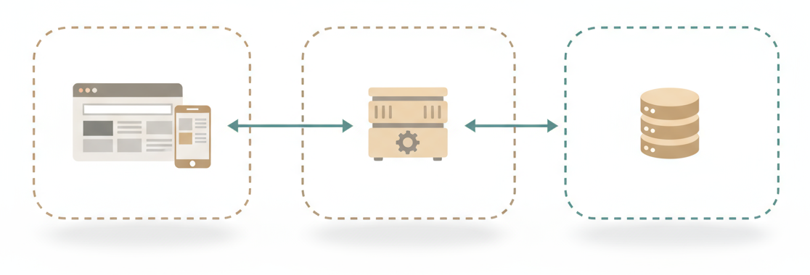
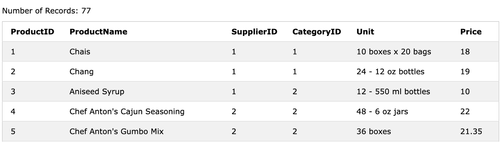
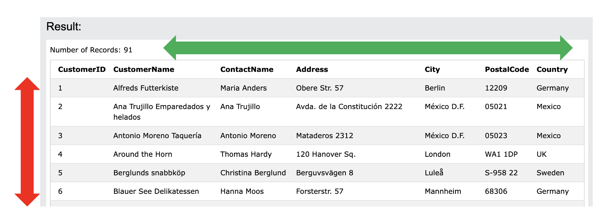

Skriptum · Datengewinnung & -aufbereitung · WS 2026/27
Kapitel 2: Datenbanken und SQL
Die meisten Daten, mit denen im Marketing und Vertrieb gearbeitet wird, liegen nicht in Excel-Dateien, sondern in Datenbanken: im Onlineshop, im CRM-System, im Newsletter-Tool oder in der Warenwirtschaft. Dieses Kapitel erklärt, wie solche Datenbanken aufgebaut sind und wie man mit der Abfragesprache SQL selbst Antworten aus ihnen holt.
1. Wozu Datenbanken?
Wer in einem Onlineshop bestellt, sieht nur die Oberfläche: eine Webseite oder eine App. Dahinter arbeiten typischerweise drei Schichten zusammen:
- Das Frontend ist das, was Kundinnen und Kunden sehen: der Browser oder die App.
- Das Backend ist ein Server, der die Geschäftslogik enthält, also etwa Preise berechnet oder prüft, ob ein Produkt lieferbar ist.
- Die Datenbank speichert alle Informationen dauerhaft: Kunden, Produkte, Bestellungen.

Jede Bestellung, jede Newsletter-Anmeldung und jeder Klick, der gespeichert wird, wird zu einer Zeile in einer Datenbanktabelle. Wer diese Daten direkt abfragen kann, ist nicht auf vorgefertigte Berichte oder Excel-Exporte angewiesen, sondern kann eigene Fragen stellen.
1.1. Der Begriff „Datenbank“
Umgangssprachlich meint „Datenbank“ zwei Dinge:
- eine strukturierte Sammlung von Daten, also die Tabellen mit ihren Inhalten und die Regeln, wie sie aufgebaut sind (das Schema), und
- die Software, die diese Daten verwaltet, ein sogenanntes Datenbankmanagementsystem (DBMS). Verbreitete Systeme sind Microsoft SQL Server, MySQL, PostgreSQL, Oracle und SQLite.
In diesem Kapitel geht es um relationale Datenbanken. Sie speichern Daten in Tabellen, die über Schlüssel miteinander verbunden sind. Diese Art von Datenbank ist seit Jahrzehnten der Standard in Unternehmen.
2. Tabellen, Zeilen, Spalten
Eine Datenbanktabelle sieht aus wie eine Tabelle in Excel. Sie folgt aber strengeren Regeln:
- Jede Zeile ist ein Datensatz, also eine Beobachtung: ein Produkt, ein Kunde, eine Bestellung.
- Jede Spalte ist ein Merkmal (Attribut) dieser Datensätze, etwa Name oder Preis.
- Jede Spalte hat einen festen Datentyp: Zahl, Text oder Datum. In eine Preisspalte passt kein Text.
Das entspricht dem Grundsatz aus Kapitel 1: eine Zeile pro Beobachtung, eine Spalte pro Merkmal.

Products. Jede Zeile ist ein Produkt, jede Spalte ein Merkmal.2.1. Die Beispieldatenbank
Im Kurs arbeiten wir mit der Beispieldatenbank von W3Schools. Sie bildet einen fiktiven Feinkosthändler ab, der Kunden auf der ganzen Welt beliefert. Sie besteht aus acht Tabellen:
| Tabelle | Inhalt | Zeilen |
|---|---|---|
Customers | Kunden mit Adresse und Land | 91 |
Orders | Bestellungen (Juli 1996 bis Februar 1997) | 196 |
OrderDetails | Bestellpositionen: welches Produkt in welcher Menge | 518 |
Products | Produkte mit Preis | 77 |
Categories | Produktkategorien | 8 |
Suppliers | Lieferanten | 29 |
Employees | Mitarbeiterinnen und Mitarbeiter | 10 |
Shippers | Versanddienstleister | 3 |
3. Schlüssel und Beziehungen
Die Stärke relationaler Datenbanken liegt darin, dass Tabellen miteinander verbunden sind. Dafür gibt es zwei Arten von Schlüsseln:
- Ein Primärschlüssel (englisch Primary Key, PK) identifiziert jede Zeile einer Tabelle eindeutig. In
Productsist das die SpalteProductID: Kein Produkt hat dieselbe Nummer wie ein anderes. - Ein Fremdschlüssel (englisch Foreign Key, FK) verweist auf den Primärschlüssel einer anderen Tabelle. Die Spalte
Products.CategoryIDenthält zum Beispiel die Nummer der Kategorie, zu der ein Produkt gehört. Den Namen der Kategorie findet man inCategories.CategoryID.
3.1. Warum Daten auf mehrere Tabellen verteilt werden
Man könnte den Kategorienamen auch direkt in jede Produktzeile schreiben. Dann stünde „Beverages“ zwölfmal in der Tabelle, nämlich bei jedem Getränk. Das hat Nachteile:
- Soll die Kategorie umbenannt werden, müssen zwölf Zeilen geändert werden.
- Vergisst man eine davon oder vertippt sich, sind die Daten widersprüchlich.
- Wiederholte Informationen verbrauchen unnötig Speicher.
Deshalb wird jede Information nur an einer Stelle gespeichert, und Tabellen werden über Schlüssel verknüpft. Dieses Vorgehen heißt Normalisierung. Der Preis dafür: Für viele Fragen müssen Tabellen beim Abfragen wieder zusammengeführt werden. Wie das geht, zeigt Abschnitt 12.
3.2. Das Entity-Relationship-Diagramm
Wie die Tabellen einer Datenbank zusammenhängen, zeigt ein Entity-Relationship-Diagramm (ER-Diagramm). Jeder Kasten ist eine Tabelle mit ihren Spalten, jede Linie eine Beziehung von einem Primärschlüssel zu einem Fremdschlüssel.

Die Linienenden zeigen, wie viele Datensätze miteinander verbunden sein können (Crow's-Foot-Notation):
- Zwei Striche bedeuten genau ein.
- Kreis und „Krähenfuß“ bedeuten kein, ein oder viele.
Gelesen wird zum Beispiel: Jede Bestellung gehört zu genau einem Kunden. Ein Kunde kann keine, eine oder viele Bestellungen haben. Tatsächlich haben 17 der 91 Kunden noch nie bestellt.
Eine Besonderheit ist die Tabelle OrderDetails. Eine Bestellung kann viele Produkte enthalten, und ein Produkt kann in vielen Bestellungen vorkommen. Diese Viele-zu-viele-Beziehung wird über eine eigene Tabelle aufgelöst: Jede Zeile in OrderDetails ist eine Bestellposition mit Bestellnummer, Produktnummer und Menge.
4. SQL: die Sprache der Datenbanken
SQL steht für Structured Query Language. Die Sprache wurde 1974 bei IBM entwickelt und ist seit 1986 ein ANSI-Standard, seit 1987 auch ein ISO-Standard. Praktisch alle relationalen Datenbanken verstehen SQL.
SQL kennt vier grundlegende Operationen, oft mit dem Kürzel CRUD zusammengefasst:
| Operation | Bedeutung | Schlüsselwort |
|---|---|---|
| Create | Datensätze anlegen | INSERT |
| Retrieve (auch Read) | Daten abfragen | SELECT |
| Update | Datensätze ändern | UPDATE |
| Delete | Datensätze löschen | DELETE |
In diesem Kurs geht es ausschließlich um das Abfragen mit SELECT. Eine Abfrage liest nur und verändert keine Daten. Beim Ausprobieren kann also nichts kaputtgehen.
4.1. Beschreiben, nicht programmieren
SQL ist eine deklarative Sprache: Eine Abfrage beschreibt, welches Ergebnis gewünscht ist, nicht wie die Datenbank es berechnen soll. Die Abfrage „alle Kunden aus Österreich“ lautet fast wörtlich so:
SELECT *
FROM Customers
WHERE Country = 'Austria'Die Datenbank nimmt die Abfrage entgegen (Request) und liefert ein Ergebnis zurück (Response). Wichtig: Das Ergebnis einer Abfrage ist immer wieder eine Tabelle, auch wenn sie nur eine Zeile oder eine Zahl enthält.
4.2. Dialekte
Jedes Datenbanksystem spricht seinen eigenen Dialekt von SQL. Die Grundlagen sind überall gleich, in Details gibt es Unterschiede, zum Beispiel:
| Microsoft SQL Server | MySQL, PostgreSQL, SQLite | |
|---|---|---|
| Anzahl der Ergebniszeilen begrenzen | SELECT TOP 5 … | … LIMIT 5 am Ende |
Groß- und Kleinschreibung bei = | wird üblicherweise ignoriert | wird in SQLite und PostgreSQL beachtet |
Der SQL-Editor des Kurses (Abschnitt 5) versteht beide Schreibweisen zum Begrenzen und ignoriert Groß- und Kleinschreibung bei Textvergleichen.
5. Der SQL-Editor
Zum Ausprobieren reicht ein Browser. Der SQL-Editor auf der Kursseite enthält die Beispieldatenbank bereits und läuft vollständig im Browser, ohne Anmeldung und ohne Installation. Er besteht aus drei Bereichen:
- Oben zeigt das ER-Diagramm alle Tabellen und Spalten. Ein Klick auf eine Tabelle zeigt ihren Inhalt.
- Links unten wird die Abfrage geschrieben und mit „Ausführen“ oder Shift + Enter gestartet.
- Rechts unten erscheint das Ergebnis, bei einem Fehler eine Erklärung.
Über das Menü „Beispiele“ lassen sich alle Abfragen aus den Folien zu diesem Kapitel laden. „Zurücksetzen“ stellt die Datenbank wieder her, falls Daten verändert wurden. Alle Abfragen in diesem Skriptum funktionieren im Editor; die Abfrage im folgenden Fenster kann direkt hier geändert und ausgeführt werden:
6. Spalten auswählen: SELECT
Jede Abfrage beginnt mit zwei Bausteinen:
SELECT spalte1, spalte2, ...
FROM tabellennameNach SELECT steht, welche Spalten im Ergebnis erscheinen sollen, nach FROM, aus welcher Tabelle die Daten stammen.
Die Ansprechpersonen aller Kunden:
SELECT ContactName
FROM CustomersErgebnis (91 Zeilen, hier die ersten drei):
| ContactName |
|---|
| Maria Anders |
| Ana Trujillo |
| Antonio Moreno |
Mehrere Spalten werden mit Komma getrennt, ein Stern * wählt alle Spalten aus:
SELECT PostalCode, City
FROM Customers
SELECT *
FROM Customers- Schlüsselwörter wie
SELECTundFROMwerden üblicherweise großgeschrieben. Die Datenbank versteht sie auch klein, die Großschreibung macht Abfragen aber lesbarer. - Spalten- und Tabellennamen müssen genau so geschrieben werden, wie sie in der Datenbank heißen:
PostalCode, nichtPostleitzahl. - Zeilenumbrüche und Einrückungen spielen keine Rolle. Eine Klausel pro Zeile hat sich als übersichtlich bewährt.
SELECT *ist praktisch, um eine Tabelle kennenzulernen. Bei großen Tabellen sollten nur die benötigten Spalten abgefragt werden.
7. Zeilen filtern: WHERE
Bisher liefert jede Abfrage alle Zeilen einer Tabelle. Mit WHERE werden nur die Zeilen ausgewählt, die eine Bedingung erfüllen. WHERE steht immer nach FROM:
SELECT spalte1, spalte2, ...
FROM tabellenname
WHERE bedingung
SELECT bestimmt die Spalten (grün), WHERE die Zeilen (rot).7.1. Vergleichsoperatoren
| Operator | Bedeutung | Beispiel |
|---|---|---|
= | gleich | Country = 'Germany' |
!= oder <> | ungleich | Country != 'Germany' |
<, <=, >, >= | kleiner, kleiner gleich, größer, größer gleich | Price > 50 |
BETWEEN … AND … | zwischen zwei Werten (Grenzen eingeschlossen) | Price BETWEEN 10 AND 13 |
IN (…) | einer der Werte in der Liste | Country IN ('Germany', 'Austria') |
Vor BETWEEN und IN kehrt ein NOT die Bedingung um, etwa Price NOT BETWEEN 10 AND 13.
Name und Preis aller Produkte, die mehr als 50 kosten:
SELECT ProductName, Price
FROM Products
WHERE Price > 50Ergebnis (7 Zeilen):
| ProductName | Price |
|---|---|
| Mishi Kobe Niku | 97 |
| Carnarvon Tigers | 62.5 |
| Sir Rodney's Marmalade | 81 |
| Thüringer Rostbratwurst | 123.79 |
| Côte de Blaye | 263.5 |
| Manjimup Dried Apples | 53 |
| Raclette Courdavault | 55 |
BETWEEN schließt beide Grenzen ein: WHERE Price BETWEEN 10 AND 13 liefert acht Produkte, darunter „Aniseed Syrup“ zum Preis von genau 10 und „Original Frankfurter grüne Soße“ zum Preis von genau 13.
7.2. Bedingungen für Text
Texte stehen in SQL in einfachen Anführungszeichen: 'Germany'. Für exakte Vergleiche dient =, für Muster der Operator LIKE mit zwei Platzhaltern:
%steht für beliebig viele Zeichen, auch für gar keines._steht für genau ein Zeichen.
| Bedingung | findet |
|---|---|
City LIKE 'B%' | Städte, die mit B beginnen (Berlin, Bern, Buenos Aires …) |
Country LIKE '%land' | Länder, die auf „land“ enden (Finland, Ireland, Poland, Switzerland) |
ProductName LIKE '%Tofu%' | Produkte, die „Tofu“ irgendwo im Namen enthalten |
PostalCode LIKE '____' | Postleitzahlen mit genau vier Zeichen (etwa in Österreich und der Schweiz) |
Postleitzahlen sind übrigens als Text gespeichert und nicht als Zahl, weil sie führende Nullen und Buchstaben enthalten können (05021, WA1 1DP).
Ob Groß- und Kleinschreibung beachtet wird, hängt vom Datenbanksystem ab: Im SQL-Editor des Kurses findet Country = 'germany' die elf deutschen Kunden, in SQLite oder PostgreSQL fände dieselbe Abfrage nichts. Am sichersten ist es, Werte genau so zu schreiben, wie sie in der Datenbank stehen.
7.3. Mehrere Bedingungen verknüpfen
| Operator | Bedeutung | Wirkung |
|---|---|---|
AND | beide Bedingungen sind erfüllt | weniger Treffer |
OR | mindestens eine Bedingung ist erfüllt | mehr Treffer |
NOT | die Bedingung ist nicht erfüllt | kehrt die Auswahl um |
Alle Kunden aus Deutschland oder Österreich:
SELECT CustomerName, City, Country
FROM Customers
WHERE Country = 'Germany' OR Country = 'Austria'Das Ergebnis enthält 13 Kunden: elf aus Deutschland und zwei aus Österreich (Ernst Handel in Graz und Piccolo und mehr in Salzburg). Kürzer geht es mit WHERE Country IN ('Germany', 'Austria').
Werden AND und OR kombiniert, gilt AND vor OR, ähnlich wie Punkt vor Strich in der Mathematik. Klammern machen die gewünschte Reihenfolge eindeutig:
SELECT CustomerName, City
FROM Customers
WHERE Country = 'Germany' AND (City = 'Berlin' OR City = 'München')Diese Abfrage liefert zwei Kunden: Alfreds Futterkiste in Berlin und Frankenversand in München.
Ist ein Feld leer, steht dort der besondere Wert NULL, also „unbekannt“. NULL ist weder 0 noch ein leerer Text. Gefiltert wird mit IS NULL bzw. IS NOT NULL; ein Vergleich wie = NULL findet nie etwas. Spätestens beim Verknüpfen von Tabellen (Abschnitt 12) wird das wichtig.
8. Sortieren und begrenzen: ORDER BY, TOP und LIMIT
Ohne Angabe ist die Reihenfolge der Ergebniszeilen nicht festgelegt. ORDER BY sortiert das Ergebnis und steht immer am Ende der Abfrage:
SELECT spalte1, spalte2, ...
FROM tabellenname
WHERE bedingung
ORDER BY spalte1 [ASC|DESC]ASC sortiert aufsteigend (A bis Z, klein nach groß). Das ist der Standard und kann deshalb auch weggelassen werden. DESC sortiert absteigend.
Mehrere Sortierkriterien werden mit Komma getrennt: ORDER BY Country, City sortiert zuerst nach Land und innerhalb eines Landes nach Stadt.
8.1. Die ersten n Zeilen
Fragen wie „die fünf teuersten Produkte“ oder „die zehn umsatzstärksten Kunden“ sind im Marketing alltäglich. Dafür wird absteigend sortiert und die Anzahl der Zeilen begrenzt. Hier unterscheiden sich die Dialekte:
-- Microsoft SQL Server
SELECT TOP 5 ProductName, Price
FROM Products
ORDER BY Price DESC
-- MySQL, PostgreSQL, SQLite
SELECT ProductName, Price
FROM Products
ORDER BY Price DESC
LIMIT 5Ergebnis:
| ProductName | Price |
|---|---|
| Côte de Blaye | 263.5 |
| Thüringer Rostbratwurst | 123.79 |
| Mishi Kobe Niku | 97 |
| Sir Rodney's Marmalade | 81 |
| Carnarvon Tigers | 62.5 |
Haben mehrere Zeilen denselben Wert, ist ihre Reihenfolge untereinander zufällig. Ein zweites Sortierkriterium schafft Klarheit, etwa ORDER BY Price DESC, ProductName.
9. Doppelte entfernen: DISTINCT
SELECT Country FROM Customers liefert 91 Zeilen, eine pro Kunde, und damit viele Länder mehrfach. DISTINCT entfernt doppelte Zeilen aus dem Ergebnis:
SELECT DISTINCT Country
FROM Customers
ORDER BY CountryDas Ergebnis enthält 21 Länder, von Argentina bis Venezuela. Die Anzahl lässt sich auch direkt zählen: SELECT COUNT(DISTINCT Country) FROM Customers ergibt 21.
10. Zusammenfassen: Aggregatfunktionen und GROUP BY
Oft interessieren nicht einzelne Zeilen, sondern Kennzahlen: Wie viele Kunden gibt es? Was kostet ein Produkt im Durchschnitt? Dafür gibt es Aggregatfunktionen, die viele Werte zu einem zusammenfassen:
| Funktion | Ergebnis |
|---|---|
COUNT(*) | Anzahl der Zeilen |
COUNT(spalte) | Anzahl der Werte in der Spalte, die nicht NULL sind |
SUM(spalte) | Summe (nur für Zahlen) |
AVG(spalte) | Durchschnitt (nur für Zahlen) |
MIN(spalte), MAX(spalte) | kleinster bzw. größter Wert (für Zahlen, Text und Datum) |
SELECT COUNT(*) AS Anzahl,
MIN(Price) AS Minimum,
MAX(Price) AS Maximum,
ROUND(AVG(Price), 2) AS Durchschnitt
FROM ProductsErgebnis:
| Anzahl | Minimum | Maximum | Durchschnitt |
|---|---|---|---|
| 77 | 2.5 | 263.5 | 28.87 |
Mit AS erhält eine Ergebnisspalte einen eigenen Namen (Alias). Ohne Alias hieße die Spalte etwa ROUND(AVG(Price), 2) oder hätte gar keinen Namen.
10.1. Kennzahlen pro Gruppe
Spannend wird es, wenn Kennzahlen pro Gruppe berechnet werden: pro Land, pro Kategorie, pro Monat. Dafür gibt es GROUP BY. Die Datenbank teilt die Zeilen zuerst in Gruppen mit gleichem Wert ein und wendet die Aggregatfunktion dann auf jede Gruppe einzeln an.
Anzahl der Kunden pro Land, die Länder mit den meisten Kunden zuerst:
SELECT Country, COUNT(*) AS Kunden
FROM Customers
GROUP BY Country
ORDER BY Kunden DESCErgebnis (21 Zeilen, hier die ersten fünf):
| Country | Kunden |
|---|---|
| USA | 13 |
| France | 11 |
| Germany | 11 |
| Brazil | 9 |
| UK | 7 |
Jede Spalte im SELECT muss entweder im GROUP BY stehen oder in einer Aggregatfunktion. SELECT Country, City, COUNT(*) … GROUP BY Country ist fehlerhaft: Welche der vielen Städte eines Landes sollte die Datenbank anzeigen?
10.2. Gruppen filtern: HAVING
WHERE filtert einzelne Zeilen, bevor gruppiert wird. Soll nach dem Ergebnis einer Aggregatfunktion gefiltert werden, etwa „nur Länder mit mindestens zehn Kunden“, steht die Bedingung in HAVING:
SELECT Country, COUNT(*) AS Kunden
FROM Customers
GROUP BY Country
HAVING COUNT(*) >= 10Das Ergebnis enthält drei Länder: USA, France und Germany.
11. Praxisbeispiel: Kampagnen vergleichen
In der Einführung wurde gefragt, welche von zwei Kampagnen erfolgreicher war. Die Zahlen sind fiktiv und stehen nicht in der Beispieldatenbank. Angenommen, sie lägen in einer Tabelle kampagnen:
| kampagne | geraet | kontakte | conversions |
|---|---|---|---|
| A | Desktop | 600 | 90 |
| A | Mobile | 2400 | 120 |
| B | Desktop | 2000 | 280 |
| B | Mobile | 500 | 20 |
Die Conversion-Rate pro Kampagne:
SELECT kampagne,
SUM(conversions) * 100.0 / SUM(kontakte) AS quote
FROM kampagnen
GROUP BY kampagneErgebnis: Kampagne A erreicht 7 %, Kampagne B 12 %. B scheint klar besser.
Nun dieselbe Rechnung, aufgeschlüsselt nach Kampagne und Gerät. Dafür stehen im GROUP BY einfach zwei Spalten:
SELECT kampagne, geraet,
SUM(conversions) * 100.0 / SUM(kontakte) AS quote
FROM kampagnen
GROUP BY kampagne, geraetErgebnis:
| kampagne | geraet | quote |
|---|---|---|
| A | Desktop | 15.0 |
| A | Mobile | 5.0 |
| B | Desktop | 14.0 |
| B | Mobile | 4.0 |
Kampagne A ist auf beiden Gerätetypen besser. B liegt insgesamt nur vorne, weil 80 % ihrer Kontakte vom Desktop kommen und der Desktop generell besser konvertiert. Dieses Phänomen heißt Simpson-Paradoxon. Wer nur die Gesamtzahl kennt, entscheidet hier falsch; wer die Daten selbst nach Segmenten aufschlüsseln kann, sieht den wahren Zusammenhang.
Viele Datenbanken rechnen mit ganzen Zahlen, wenn beide Werte ganze Zahlen sind: 210 / 3000 ergibt dort 0 statt 0,07. Die Multiplikation mit 100.0 macht daraus eine Kommazahl und rechnet gleich in Prozent um.
12. Tabellen verknüpfen: JOIN
Durch die Normalisierung (Abschnitt 3) sind zusammengehörige Informationen auf mehrere Tabellen verteilt: Die Tabelle Products kennt nur die Nummer der Kategorie, ihren Namen kennt nur Categories. Mit JOIN werden Tabellen bei der Abfrage wieder zusammengeführt. Nach ON steht, über welche Spalten die Zeilen zusammenpassen, in der Regel Fremdschlüssel und Primärschlüssel:
SELECT p.ProductName, c.CategoryName
FROM Products p
JOIN Categories c ON p.CategoryID = c.CategoryIDErgebnis (77 Zeilen, hier die ersten drei):
| ProductName | CategoryName |
|---|---|
| Chais | Beverages |
| Chang | Beverages |
| Aniseed Syrup | Condiments |
Die Buchstaben p und c sind Kurznamen (Aliase) für die Tabellen. Sie ersparen Tipparbeit und machen eindeutig, aus welcher Tabelle eine Spalte stammt. Das ist nötig, wenn beide Tabellen eine Spalte gleichen Namens haben, wie hier CategoryID.
12.1. Arten von Joins
Interessant wird es, wenn nicht zu jeder Zeile ein passender Partner existiert. Je nach Art des Joins werden solche Zeilen unterschiedlich behandelt:
INNER JOIN(oder kurzJOIN): nur Zeilen, die in beiden Tabellen einen Partner haben.LEFT JOIN: alle Zeilen der linken Tabelle (der nachFROM). Fehlt ein Partner in der rechten Tabelle, sind deren SpaltenNULL.FULL OUTER JOIN: alle Zeilen beider Tabellen, zusammengeführt, wo ein Partner existiert.


NULL.Den Unterschied zeigen Kunden und Bestellungen:
Customers INNER JOIN Ordersliefert 196 Zeilen: jede Bestellung mit ihrem Kunden. Kunden ohne Bestellung fehlen.Customers LEFT JOIN Ordersliefert 213 Zeilen: zusätzlich die 17 Kunden, die noch nie bestellt haben, mit leeren Bestellspalten.
Das lässt sich für eine typische Marketingfrage nutzen: Welche Kunden haben noch nie bestellt?
SELECT c.CustomerName, c.Country
FROM Customers c
LEFT JOIN Orders o ON c.CustomerID = o.CustomerID
WHERE o.OrderID IS NULLDas Ergebnis enthält 17 Kunden, darunter Alfreds Futterkiste und Blauer See Delikatessen aus Deutschland, eine gute Zielgruppe für eine Reaktivierungskampagne.
12.2. JOIN und GROUP BY kombinieren
Joins lassen sich mit allem kombinieren, was bisher behandelt wurde. Anzahl und Durchschnittspreis der Produkte pro Kategorie, diesmal mit dem Namen der Kategorie:
SELECT c.CategoryName,
COUNT(*) AS Anzahl,
ROUND(AVG(p.Price), 2) AS Durchschnittspreis
FROM Products p
JOIN Categories c ON p.CategoryID = c.CategoryID
GROUP BY c.CategoryName
ORDER BY Durchschnittspreis DESCErgebnis:
| CategoryName | Anzahl | Durchschnittspreis |
|---|---|---|
| Meat/Poultry | 6 | 54.01 |
| Beverages | 12 | 37.98 |
| Produce | 5 | 32.37 |
| Dairy Products | 10 | 28.73 |
| Confections | 13 | 25.16 |
| Condiments | 12 | 23.06 |
| Seafood | 12 | 20.68 |
| Grains/Cereals | 7 | 20.25 |
Es können auch mehr als zwei Tabellen verknüpft werden, indem mehrere JOIN aufeinander folgen. Der Umsatz pro Kategorie ergibt sich aus Menge mal Preis jeder Bestellposition:
SELECT c.CategoryName,
SUM(d.Quantity * p.Price) AS Umsatz
FROM OrderDetails d
JOIN Products p ON d.ProductID = p.ProductID
JOIN Categories c ON p.CategoryID = c.CategoryID
GROUP BY c.CategoryName
ORDER BY Umsatz DESCDie umsatzstärksten Kategorien sind Beverages (99.464,50), Dairy Products (69.921,00) und Confections (54.909,16).
13. Aufbau einer Abfrage
Die Klauseln einer Abfrage müssen in einer festen Reihenfolge stehen. Nicht jede Abfrage braucht alle Teile, aber die vorhandenen stehen immer in dieser Reihenfolge:
SELECT spalten, Aggregatfunktionen -- welche Spalten
FROM tabelle -- aus welcher Tabelle
JOIN andere_tabelle ON bedingung -- verknüpft mit
WHERE bedingung -- welche Zeilen
GROUP BY spalten -- pro Gruppe
HAVING bedingung -- welche Gruppen
ORDER BY spalten -- in welcher Reihenfolge
LIMIT n -- wie viele (SQL Server: TOP n nach SELECT)Ausgeführt wird die Abfrage allerdings in einer anderen Reihenfolge: zuerst FROM und JOIN, dann WHERE, dann GROUP BY und HAVING, dann erst SELECT, zuletzt ORDER BY und die Begrenzung. Daraus erklären sich zwei Regeln:
- In
WHEREsind keine Aggregatfunktionen erlaubt, weil zu diesem Zeitpunkt noch nicht gruppiert wurde. Dafür gibt esHAVING. - Ein Alias aus dem
SELECTkann inORDER BYverwendet werden, inWHEREaber nicht.
14. Typische Fehler
| Fehler | Richtig |
|---|---|
WHERE Country = GermanyWHERE Country = "Germany" | WHERE Country = 'Germany'Text in einfachen Anführungszeichen |
SELECT CustomerName, City, FROM … | kein Komma nach der letzten Spalte |
WHERE Country = 'Germany' OR 'Austria' | WHERE Country = 'Germany' OR Country = 'Austria'oder Country IN ('Germany', 'Austria') |
WHERE PostalCode = NULL | WHERE PostalCode IS NULL |
WHERE COUNT(*) >= 10 | HAVING COUNT(*) >= 10 nach GROUP BY |
Spalte im SELECT, die weder gruppiert noch aggregiert ist | Spalte in GROUP BY aufnehmen oder aggregieren |
fehlende oder falsche ON-Bedingung beim JOIN | Die Zeilenzahl explodiert, weil jede Zeile mit vielen anderen kombiniert wird. Die ON-Bedingung muss Fremdschlüssel und Primärschlüssel verbinden. |
TOP in MySQL, PostgreSQL oder SQLite, LIMIT in SQL Server | auf den Dialekt achten (Abschnitt 4); der SQL-Editor des Kurses versteht beides |
15. Zum Ausprobieren
Die folgenden Aufgaben lassen sich im SQL-Editor lösen.
- Name und Telefonnummer aller Lieferanten ausgeben.
- Alle Produkte mit einem Preis zwischen 20 und 30 ausgeben, die teuersten zuerst.
- Alle Kunden aus Städten ausgeben, deren Name mit „S“ beginnt.
- Aus welchen Ländern kommen die Lieferanten? Jedes Land nur einmal ausgeben.
- Wie viele Produkte liefert jeder Lieferant? Die Lieferantennummer genügt.
- Dieselbe Frage mit dem Namen des Lieferanten (Tipp:
JOIN). - Durchschnittspreis pro Kategorie mit Kategoriename, nur Kategorien mit einem Durchschnitt über 30.
- Wie viele Bestellungen hat jede Mitarbeiterin bzw. jeder Mitarbeiter bearbeitet? Nachname und Anzahl ausgeben, sortiert nach Anzahl.
16. Begriffe
- Abfrage (Query)
- Anweisung an die Datenbank, Daten zu liefern. Das Ergebnis ist immer eine Tabelle.
- Aggregatfunktion
- Funktion, die viele Werte zu einem zusammenfasst:
COUNT,SUM,AVG,MIN,MAX. - Alias
- Eigener Name für eine Ergebnisspalte (
AS) oder Kurzname für eine Tabelle. - Datenbankmanagementsystem (DBMS)
- Software, die Datenbanken verwaltet, zum Beispiel Microsoft SQL Server, MySQL, PostgreSQL oder SQLite.
- Datensatz
- Eine Zeile einer Tabelle, also eine Beobachtung.
- Dialekt
- Die Variante von SQL, die ein bestimmtes Datenbanksystem versteht.
- Entity-Relationship-Diagramm (ER-Diagramm)
- Grafische Darstellung der Tabellen einer Datenbank und ihrer Beziehungen.
- Fremdschlüssel (Foreign Key, FK)
- Spalte, die auf den Primärschlüssel einer anderen Tabelle verweist.
- JOIN
- Verknüpfung zweier Tabellen in einer Abfrage über zusammenpassende Spalten.
- Normalisierung
- Aufteilen von Daten auf mehrere Tabellen, sodass jede Information nur einmal gespeichert wird.
- NULL
- Kennzeichnung für einen fehlenden oder unbekannten Wert.
- Primärschlüssel (Primary Key, PK)
- Spalte, die jede Zeile einer Tabelle eindeutig identifiziert.
- Relationale Datenbank
- Datenbank, die Daten in Tabellen speichert, die über Schlüssel verbunden sind.
- SQL
- Structured Query Language, die Standardsprache für relationale Datenbanken.
16.1. Weiterführend
- W3Schools SQL Tutorial: Erklärungen und Beispiele zu allen Befehlen, mit Editor zum Ausprobieren
- SQLBolt: interaktive Übungen, die Schritt für Schritt aufeinander aufbauen